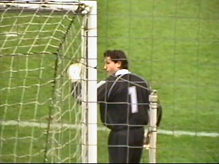

|
VVV - MVV (1-0) 5 december 2003 |
Vanavond werd een bezoekje gebracht aan VVV
Venlo, de andere geelzwarte club uit Limburg
waar menig Rodaspeler rijpt of gestald wordt.
Stadion "De Koel" is onlangs gerenoveerd. Via
een tunnel loop je onder de sponsorruimtes door
naar het veld.
Hier wordt de naam van het stadion duidelijk.

De goed geoutilleerde catering verkoopt halve
hanen zonder alcohol voor € 2,50. DIEFSTAL !!!
De minuut stilte vanwege het overlijden van
Roda-preses Theo Pickée werd zowel door de
supporters van VVV als MVV gerespecteerd.

Kevin Begois de beoogde concurrent voor
Kujovic is een zeer gedreven en klasse keeper!
Vladan kijk uit.....
Behalve Begois voetbalt er in Venlo een andere
ex-KVM'er in Rodadienst: Ken Leemans. Op
deze foto met nummer 11 de net-niet bij Roda
doorgebroken spits Bas Jacobs.
Het kleine supportershome waar wel echt bier
verkrijgbaar is. Een glas Brand kost er 1 euro.
Het uitzicht vanaf het supportershome waar het
lekker ontdooien was doet denken aan dat van
een skybox.
De keeper van MVV, Danny Wintjens, kreeg de
meest lompe opmerkingen en voorwerpen vanuit
vak O3 naar zijn hoofd geslingerd. Ondanks zijn
spillebeentjes een zeer goede keeper. Hier belandt
een magnesiumflasher op het veld nadat al eerder
een gele-rookpot de lucht inging.
In de 85e minuut geeft Bas Jacobs een voorzet.
Invaller Paul Jans schiet de bal binnen: 1-0.
Feest op de "sfeertribune".
De sjalen gaan de lucht in.
Gelukkig deed deze meneer niet mee aan "Wie
niet springt die is een Sjeng".
In de slotfase met 4 minuten extra speeltijd kreeg
MVV nog een kans op de gelijkmaker. De vrijetrap
ging echter hoog over.
Een krappe en nauwelijks verdiende overwinning
voor VVV.
In het supportershome was weinig sfeer terwijl in
de business-ruimten aardig gefeest werd.
© Koempels
Pleasure Dome